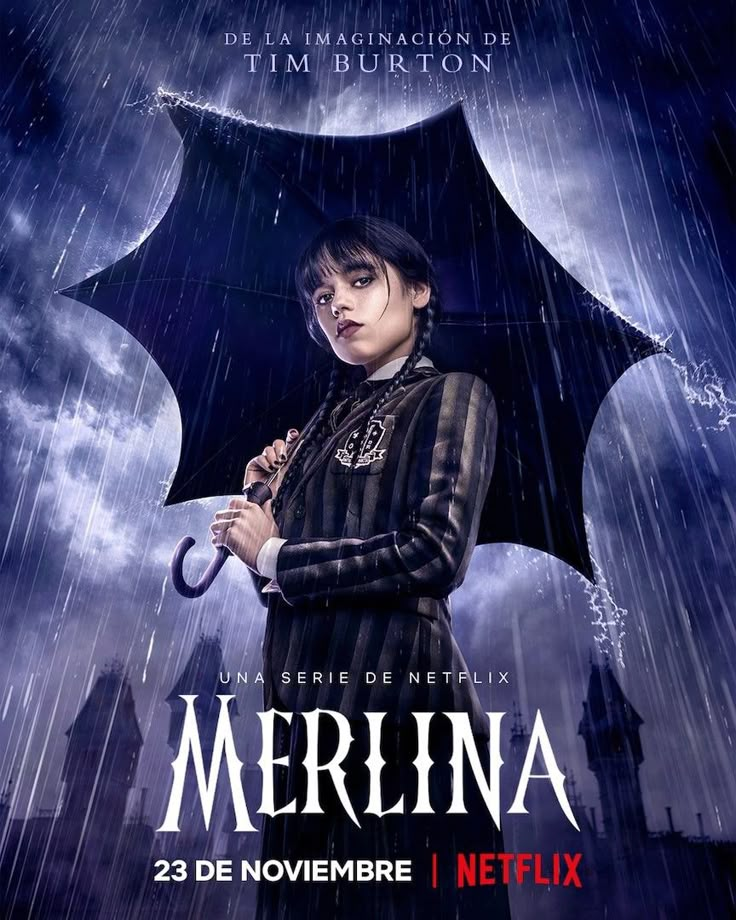

Vera Beluzo Garcia
Yo decidí entrar a Informática aunque todo mi grupo de amigos de ese momento eligió otra orientación. Entré con dudas, expectativas y un poco de miedo. Pero gracias a muchas personas que me hicieron sentir cómoda, pude vivir este tiempo de la mejor manera. Y si alguien me preguntara si me arrepiento de esa elección, sin duda respondería que no cambiaría nada.
De estos tres años compartidos me quedan anécdotas, chistes internos, recreos, charlas, amigos que espero seguir viendo, días buenos y también malos, que hicieron que todo este tiempo valiera la pena.
Mis recuerdos favoritos
- El viaje a Bariloche
- Las horas libres
- La fiesta de egresados
- Las juntadas después de la escuela
Música que hoy escucho
- Charly Garcia
- Sabrina Carpenter
- Babasonicos
- Virus
- Tonolec
Mis peliculas y series que he mirado
- La sociedad de los poetas muertos
- La odisea de los giles
- Merlina 
- El viaje de Chihiro

Durante generaciones, los estudiantes de Welton Academy se prepararon para vivir vidas de conformidad y tradición, hasta que un nuevo profesor carismático, John Keating, los inspira a pensar por sí mismos, vivir la vida al máximo y carpe diem.

Un grupo de vecinos de un pueblo de Buenos Aires que, tras perder sus ahorros en una estafa bancaria perpetrada por un gerente y un abogado durante la crisis económica argentina de 2001, se unen para idear un plan y vengarse recuperando lo que les pertenece.
Merlina Addams es la siniestra hija mayor de la familia Addams. Al comenzar su adolescencia, es ingresada a la peculiar Academia Nevermore donde buscará sobresalir como estudiante

Chihiro es una niña de diez años caprichosa y testaruda que cree que el universo entero debe someterse a sus deseos. Camino de su nuevo hogar junto a sus padres, una idea que la enfurece, la familia se equivoca de camino y aparece al final de un misterioso callejón sin salida, donde topan con un extraño edificio con un largo pasaje que los conduce a un pueblo fantasmal donde los espera un magnífico banquete.
Mi voz
Respondiendo..
Aprendí a confiar más en mis decisiones y a animarme a elegir lo que realmente quería, aunque diera miedo.
Que aprovechen el tiempo y sean organizados.
Estar todos juntos en el mismo aula.
Momentos